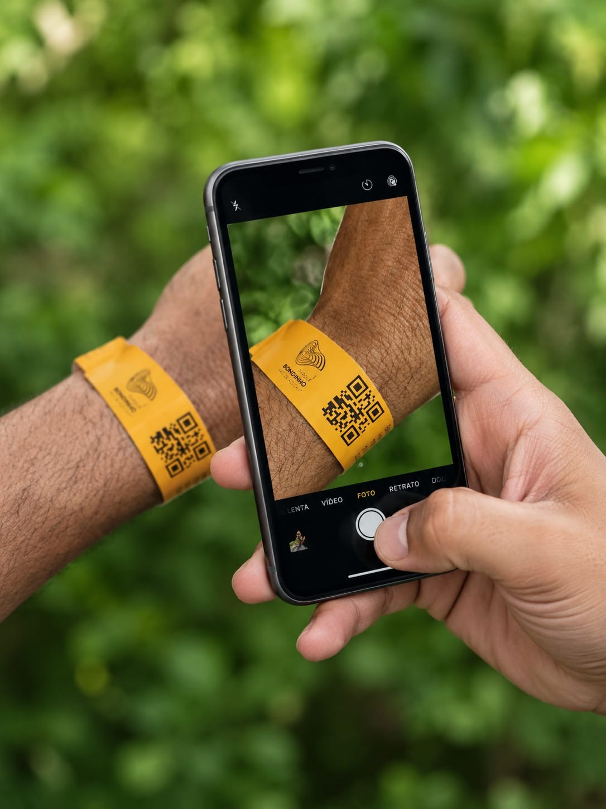
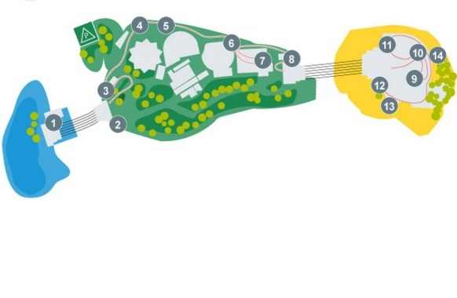

Bem-vindo ao protótipo

Narração Turística
Roteiro histórico e cultural de cada ponto do circuito.
Audiodescrição Detalhada — PCD (Tipo 2)
A narração turística, seguida da descrição sensorial detalhada da paisagem.
Escolha seu plano
Toque numa opção para continuar.
Básico
Gratuito, com anúncios entre as telas.
Espaço Comercial
No plano Básico, este espaço aparece a cada troca de tela — no plano Premium, ele não existe.
Formas de
pagamento
O valor deste serviço é de US$ 5,00, que será cobrado em 1 parcela.
Simulação — nenhum pagamento real é processado neste protótipo.
Idioma:
Percurso
Narração por GPS no produto real; aqui, toque para tocar.

Ajustes
Modo automático (por localização)
No produto real, a narração é disparada pelo GPS conforme você caminha entre os mirantes. Neste protótipo, o disparo é manual: toque em "Tocar" na aba Percurso.
Modo livre (explore por conta própria)
Toque em qualquer mirante do mapa, na aba "Percurso", em qualquer ordem — sem precisar seguir o circuito físico.
Toque em qualquer lugar da imagem para continuar.
🎁 Brinde de engajamento
Foto aérea (drone) entregue a quem segue o Instagram do parque (seção 1.4/2.2 do plano — brinde de drone na v1.0, helicóptero entra na v1.1).
Sessão encerrada
Obrigado por experimentar o protótipo "Pão de Açúcar para Você". Para recomeçar, recarregue esta página.